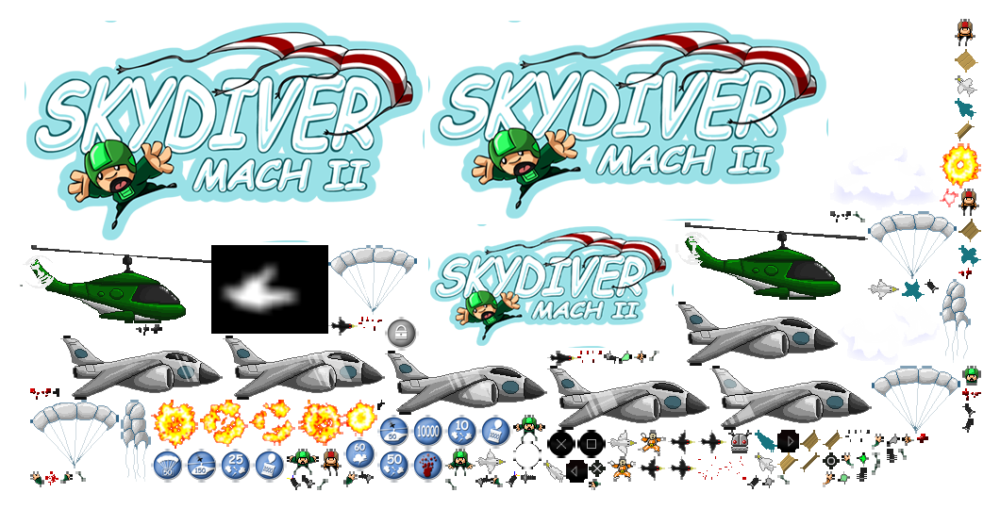
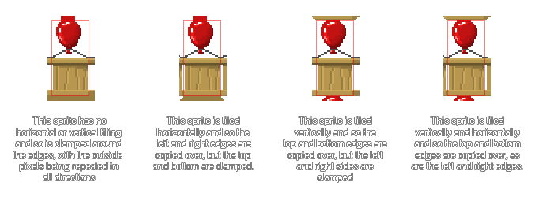

Wenn Sie ein Spiel mit GameMaker Studio 2 erstellen, werden Sie sicherlich Grafiken - Sprites, Tilesets und Schriftarten - erstellt haben, die dazu passen. Diese Grafiken werden auf Textur-Seiten gespeichert, die GameMaker Studio 2 für Sie aus allen Bildressourcen erstellt, die Ihr Spiel enthält. Im Folgenden finden Sie ein Beispiel für eine fertige Textur-Seite: 
Wie Sie sehen können, sind die Spielgrafiken so durcheinander angeordnet, dass sie alle auf eine Seite mit 2 Seiten passen, zB 512x512, 1024x512 usw. bis zu einer maximalen Seitengröße von 4096x4096 Pixeln. Beachten Sie, dass die maximale Größe einer Textur-Seite von der gewählten Export-Plattform abhängt, da einige Ziele Seiten, die größer als 2048x2048px sind, nicht zulassen. Es ist auch erwähnenswert, dass selbst wenn Sie eine Ressource haben, die größer als 4096px ist - oder die maximale Größe für die gewählte Plattform - wird diese um die Hälfte (und die Hälfte, falls nötig) verkleinert , bis sie auf die maximale Seitengröße passt Es wird nicht in Abschnitte über verschiedene Texturseiten aufgeteilt.
Es ist auch erwähnenswert, dass wenn Ihre Sprites viel leeren Raum (dh: transparente Pixel) um sie herum haben, sie standardmäßig abgeschnitten werden, um irgendwelche dieser "unsichtbaren" Pixel zu entfernen und so viele Bilder wie möglich in eine einzelne Textur zu packen Seite. Wenn dies nicht der Fall ist, müssen Sie es im Fenster Texturgruppen deaktivieren.
Textureinstellungen
Der Sprite-Ressourceneditor hat einen Abschnitt mit dem Titel Textureinstellungen, der unten angezeigt wird: 
Hier können Sie festlegen, wie das Bild auf der Textur-Seite gespeichert werden soll und ob es ein Bild ist, das speziell für ein 3D-Objekt verwendet wird oder separat gespeichert werden muss und welcher Textur-Seite (falls vorhanden) es zugewiesen werden muss. Die ersten beiden Optionen, Horizontale Kachel und Kachel vertikal, beziehen sich darauf, wie die Kanten des Bildes erstellt werden, wenn sie auf der Texturseite platziert werden. Bei einem Bild, das gekachelt werden soll, werden die Kanten (horizontal oder vertikal) durch die Kanten von der gegenüberliegenden Seite hinzugefügt. Wenn keine Kachelung ausgewählt ist, wird das Sprite geklammert und die Kantenpixel werden wiederholt eine Einstellung für die Breite des Ausgabefokus, die in den Eigenschaften des Kachelsatzes gefunden wird, die dasselbe tut, nur für jede Kachel in der Menge. Das folgende Bild zeigt dies: 
Unter diesen Einstellungen befindet sich die Einstellung Separate Texturseite. Mit dieser Option wird GameMaker Studio 2 gezwungen, dieses Bild auf seiner eigenen Texturseite zu platzieren, und es sind keine Optionen damit verbunden, da das Kacheln oder Klemmen direkt durch Code gesteuert wird. Dies wird am häufigsten zum Texturieren von 3D-Modellen verwendet (in diesem Fall sollte die Textur eine Potenz von 2 sein, zB 128x128 oder 512x512), aber Sie können damit jedes Bild auf seine eigene einzigartige Seite ziehen.
Nun, wenn Ihr Spiel mit vielen künstlerischen Ressourcen groß ist, kann es sein, dass die Art und Weise, wie GameMaker Studio 2 diese Seiten automatisch erstellt, nicht optimal ist, um das Zielgerät optimal zu nutzen, da ein Raum in Ihr Spiel benötigt Ressourcen von 4 verschiedenen Textur-Seiten, das Gerät muss diese Seiten ständig in (und aus) Speicher wechseln, was zu Leistungseinbußen führen kann. Zu diesem Zweck haben Sie die Möglichkeit, GameMaker Studio 2 mitzuteilen, welche Bilder auf einer bestimmten Textur-Seite platziert werden sollen. Das letztendliche Ziel ist es, die Anzahl der in einem Spiel durchgeführten Swaps zu minimieren (Textur-Seiten können hinzugefügt werden) aus dem Texturgruppen- Fenster). Es ist auch erwähnenswert, dass auf den einzelnen Plattform-Registerkarten, die in den Spieloptionen zu finden sind, eine Schaltfläche vorhanden ist, mit der Sie die von Ihnen definierten Texturseiten genauso anzeigen können, wie sie für jedes Ziel erstellt würden.
Sollten Sie in Ihrem Spiel eine Textur haben, die größer als die Seitengröße der Textur ist, wird dieses Bild automatisch von GameMaker Studio 2 verkleinert, damit es in die Textur passt. Das heißt, wenn Sie Ihr Spiel unter Windows, Ubuntu (Linux) oder MacOS testen, sieht das Spiel vielleicht besser aus, wenn Sie größere Texturseiten verwenden, aber auf iOS (oder einem anderen Ziel, das eine kleinere Seitengröße für optimale Leistung benötigt ) Die Textur kann verschwommen aussehen oder Artefakte aufweisen. Es ist wichtig, dass Sie sicherstellen, dass Ihre Bilder alle auf die kleinste der Seitengrößen passen, die Ihr Spiel verwendet, und wenn nicht, sollten Sie sie in kleinere Bilder aufteilen und sie dann in Ihrem Spiel zusammenziehen, um dem Bild zu geben Illusion eines großen, vollständigen Bildes.